(29) Simulation – full [draft]¶
Motivation: Added the object, finalized the code.
# HIDE CODE
import os
import sys
from copy import deepcopy as dc
from os.path import join as pjoin
from IPython.display import display, IFrame, HTML
# tmp & extras dir
git_dir = pjoin(os.environ['HOME'], 'Dropbox/git')
extras_dir = pjoin(git_dir, 'jb-MTMST/_extras')
fig_base_dir = pjoin(git_dir, 'jb-MTMST/figs')
tmp_dir = pjoin(git_dir, 'jb-MTMST/tmp')
# GitHub
sys.path.insert(0, pjoin(git_dir, '_MTMST'))
from model.opticflow import *
# warnings, tqdm, & style
warnings.filterwarnings('ignore', category=DeprecationWarning)
from tqdm.notebook import tqdm
from rich.jupyter import print
%matplotlib inline
set_style()
# HIDE CODE
def show_thetaphi(t, p):
fig, axes = create_figure(1, 4, (13, 2.5), tight_layout=True)
im = axes[0].imshow(t, cmap='nipy_spectral')
plt.colorbar(im, ax=axes[0])
im = axes[2].imshow(p, cmap='hsv', vmin=0, vmax=2*np.pi)
plt.colorbar(im, ax=axes[2])
for ax in [axes[0], axes[2]]:
ax.invert_yaxis()
ax.tick_params(labelsize=10)
ax.set(
xticks=ticks,
yticks=ticks,
xticklabels=ticklabels,
yticklabels=ticklabels,
)
axes[1].axvline(np.deg2rad(fov), color='r', ls='--', label=f'{fov} deg')
sns.histplot(
t.ravel(), ax=axes[1], label=r'$\theta$',
bins=np.linspace(0, np.pi/2, 91), stat='count')
sns.histplot(
p.ravel(), ax=axes[3], label=r'$\phi$', color='C0',
bins=np.linspace(0, 2*np.pi, 37), stat='count')
sns.histplot(
p[t <= np.deg2rad(fov)], ax=axes[3], label=r'$\phi$' + f' (<{fov})', color='C1',
bins=np.linspace(0, 2*np.pi, 37), stat='count')
for ax in [axes[1], axes[3]]:
ax.set_ylabel('')
ax.legend(fontsize=8, loc='upper left')
plt.show()
def show_xyzd(x, y, z, d, cmap='Spectral', grid=False):
fig, axes = create_figure(1, 4, (12, 2.5), 'all', 'all', tight_layout=True)
im = axes[0].imshow(x, cmap=cmap)
plt.colorbar(im, ax=axes[0])
axes[0].set_title(r'$\mathcal{x}$', y=1.02, fontsize=17)
im = axes[1].imshow(y, cmap=cmap)
plt.colorbar(im, ax=axes[1])
axes[1].set_title(r'$\mathcal{y}$', y=1.02, fontsize=17)
im = axes[2].imshow(z, cmap=cmap)
plt.colorbar(im, ax=axes[2])
axes[2].set_title(r'$\mathcal{z}$', y=1.02, fontsize=17)
im = axes[3].imshow(d, cmap=cmap)
plt.colorbar(im, ax=axes[3])
axes[3].set_title(r'$\mathcal{d} = \sqrt{\mathcal{x}^2+\mathcal{y}^2+\mathcal{z}^2}$', y=1.02, fontsize=14)
axes[-1].invert_yaxis()
for ax in axes.flat:
ax.tick_params(labelsize=10)
ax.set(
xticks=ticks,
yticks=ticks,
xticklabels=ticklabels,
yticklabels=ticklabels,
)
if grid:
add_grid(axes)
plt.show()
def hist_xyzd(x, y, d, z=None, bins=30):
kws = {
'bins': bins,
'stat': 'percent',
}
fig, axes = create_figure(2, 4, (13, 5), sharey='all', constrained_layout=True)
sns.histplot(x.ravel(), ax=axes[0, 0], **kws)
sns.histplot(y.ravel(), ax=axes[0, 1], **kws)
if z is not None:
sns.histplot(z.ravel(), ax=axes[0, 2], **kws)
sns.histplot(d.ravel(), ax=axes[0, 3], **kws)
sns.histplot(x[of.theta < np.deg2rad(fov)], ax=axes[1, 0], **kws)
sns.histplot(y[of.theta < np.deg2rad(fov)], ax=axes[1, 1], **kws)
if z is not None:
sns.histplot(z[of.theta < np.deg2rad(fov)], ax=axes[1, 2], **kws)
sns.histplot(d[of.theta < np.deg2rad(fov)], ax=axes[1, 3], **kws)
axes[0, 0].set_title(r'$x$', y=1.02, fontsize=17)
axes[0, 1].set_title(r'$y$', y=1.02, fontsize=17)
axes[0, 2].set_title(r'$z$', y=1.02, fontsize=17)
axes[0, 3].set_title(r'$d$', y=1.02, fontsize=17)
plt.show()
def show_velocity(v, cmap='Spectral_r', grid=False):
rho, phi = vel2polar(v)
vminmax = np.max(np.abs(v))
kws = dict(
cmap='bwr',
vmax=vminmax,
vmin=-vminmax,
)
fig, axes = create_figure(1, 4, (12, 2.5), 'all', 'all', tight_layout=True)
im = axes[0].imshow(v[..., 0], **kws)
plt.colorbar(im, ax=axes[0])
axes[0].set_title(r'$v_x$', y=1.02, fontsize=17)
im = axes[1].imshow(v[..., 1], **kws)
plt.colorbar(im, ax=axes[1])
axes[1].set_title(r'$v_y$', y=1.02, fontsize=17)
im = axes[2].imshow(rho, cmap=cmap)
plt.colorbar(im, ax=axes[2])
axes[2].set_title(r'$\rho$', y=1.02, fontsize=17)
im = axes[3].imshow(phi, cmap='hsv', vmin=0, vmax=2*np.pi)
plt.colorbar(im, ax=axes[3])
axes[3].set_title(r'$\phi$', y=1.02, fontsize=14)
axes[-1].invert_yaxis()
for ax in axes.flat:
ax.tick_params(labelsize=10)
ax.set(
xticks=ticks,
yticks=ticks,
xticklabels=ticklabels,
yticklabels=ticklabels,
)
if grid:
add_grid(axes)
plt.show()
from skimage.transform import resize
def show_opticflow(v):
fig, axes = create_figure(1, 3, (12, 4), constrained_layout=True)
axes[0].quiver(
range(-2, 2 + 1),
range(-2, 2 + 1),
resize(v[..., 0], (4+1,) * 2),
resize(v[..., 1], (4+1,) * 2),
# scale=150,
)
axes[1].quiver(
range(-4, 4 + 1),
range(-4, 4 + 1),
resize(v[..., 0], (8+1,) * 2),
resize(v[..., 1], (8+1,) * 2),
# scale=100,
)
axes[2].quiver(
range(-8, 8 + 1),
range(-8, 8 + 1),
resize(v[..., 0], (16+1,) * 2),
resize(v[..., 1], (16+1,) * 2),
# scale=100,
)
ax_square(axes)
plt.show()
Test¶
fix = np.array([[0, 0], [0.3, 0], [0, 0.3], [0.3, 0.3]])
fix.shape
(4, 2)
fov = 45
res = 1
self = of = OpticFlow(
fov=fov,
res=res,
).compute_coords(fix=fix)
of.dim
91
ticks, ticklabels = zip(*[
(i, str(int(np.round(np.rad2deg(x)))))
for i, x in enumerate(of.span) if i % 15 == 0
])
ticklabels
('-45', '-30', '-15', '0', '15', '30', '45')
theta, phi = self2polar(of.alpha[..., 0], of.alpha[..., 1])
show_thetaphi(theta, phi)

i = 1
X = np.einsum('ij, mnj -> mni', of.R[i], of.x[i])
show_xyzd(of.x[i, ..., 0], of.x[i, ..., 1], of.x[i, ..., 2], sp_lin.norm(of.x[i, ...], axis=-1))
show_xyzd(X[..., 0], X[..., 1], X[..., 2], sp_lin.norm(X, axis=-1))
fix[i]
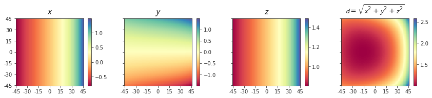
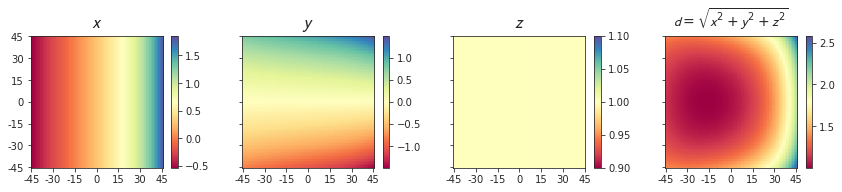
array([0.3, 0. ])
plt.plot(X[..., 0][0])
[<matplotlib.lines.Line2D at 0x7f268db81460>]
np.min(X[..., 0]), np.max(X[..., 0])
(-0.538461538461538, 1.857142857142858)
np.tan(np.arctan(0.3) - np.deg2rad(45)), np.tan(np.arctan(0.3) + np.deg2rad(45))
(-0.5384615384615384, 1.8571428571428574)
START¶
obj_pos = np.array([
[-0.2, 0, 0.2],
[-0.2, 0, 0.4],
[-0.2, 0, 0.6],
[-0.2, 0, 0.8],
[-0.2, 0, 1.0],
[-0.2, 0.2, 1.0],
[0, 0, 0.5],
[0, 0, 1.0],
[0, 0, 0.5],
[0, 0, 1.0],
]).T
obj_vel = np.array([
[13.5, 5.7, 0],
[13.5, 5.7, 0],
[13.5, 5.7, 0],
[13.5, 5.7, 0],
[13.5, 5.7, 0],
[13.5, 5.7, 0],
[13.5, 5.7, 0],
[13.5, 5.7, 0],
[0, 0, 0],
[0, 0, 0],
]).T
obj_pos.shape, obj_vel.shape
((3, 10), (3, 10))
vel = np.array([
[0, 0, 10],
[0, 0, -10],
[5, 5, 0],
[1, -2, 0],
[3, 0, 10],
[3, 3, 1],
[-2, 1, 5],
], dtype=float).T
vel.shape
(3, 7)
vel
array([[ 0., 0., 5., 1., 3., 3., -2.],
[ 0., 0., 5., -2., 0., 3., 1.],
[ 10., -10., 0., 0., 10., 1., 5.]])
v_transl_obj, x, v_rot, v_transl, alpha_dot = of.compute_flow(vel, obj_pos, obj_vel)
v_transl_obj.shape, x.shape, v_rot.shape, v_transl.shape, alpha_dot.shape
((4, 91, 91, 3, 7, 10),
(4, 91, 91, 3, 7, 10),
(4, 91, 91, 3, 7, 10),
(4, 91, 91, 3, 7, 10),
(4, 91, 91, 2, 7, 10))
i, j, k = 0, 0, 7
show_velocity(alpha_dot[i, ..., j, k])
show_opticflow(alpha_dot[i, ..., j, k])
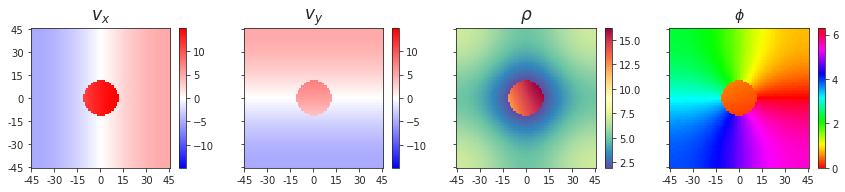
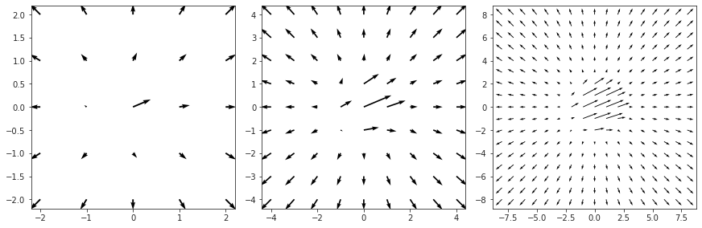
i, j, k = 0, 1, 7
show_velocity(alpha_dot[i, ..., j, k])
show_opticflow(alpha_dot[i, ..., j, k])
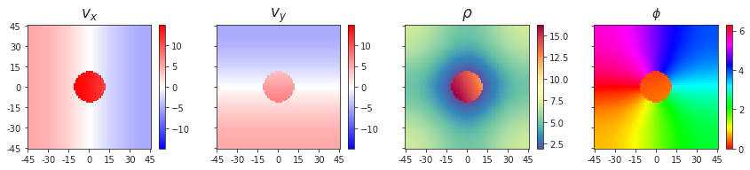
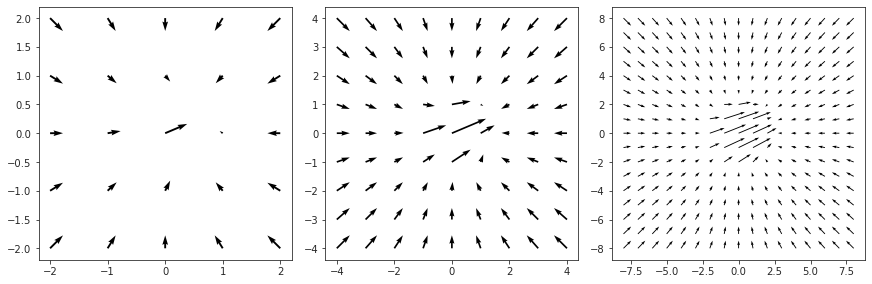
# Was: v_transl[~nans] = v_transl_obj[~nans] . . . (instead of correct: v_transl[~nans] += v_transl_obj[~nans])
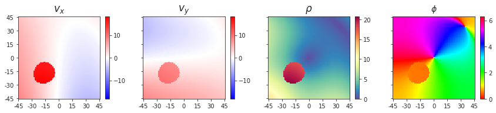
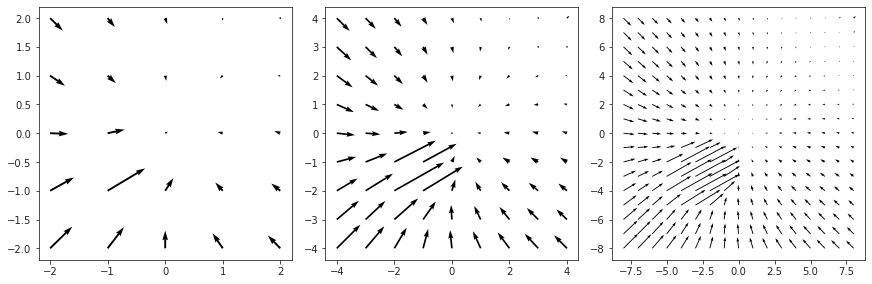
i, j, k = 3, 1, 7
show_velocity(alpha_dot[i, ..., j, k])
show_opticflow(alpha_dot[i, ..., j, k])
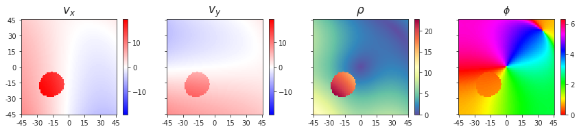
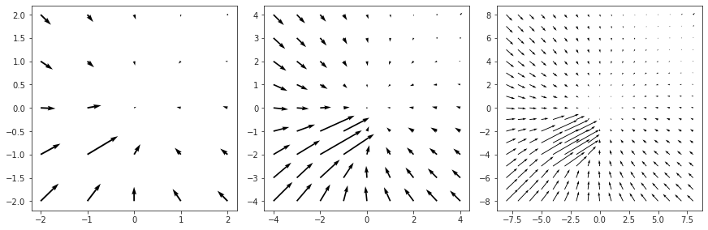
# Was: v_transl[~nans] = v_transl_obj[~nans] . . . (instead of correct: v_transl[~nans] += v_transl_obj[~nans])
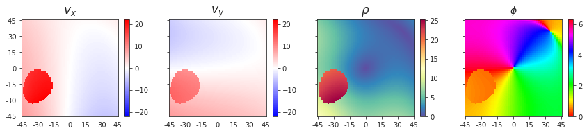
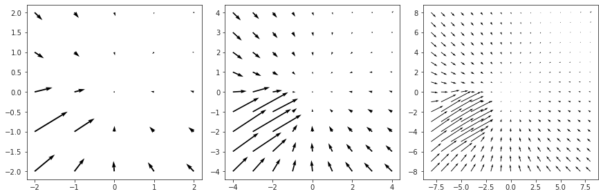
i, j, k = 3, 1, 3
show_velocity(alpha_dot[i, ..., j, k])
show_opticflow(alpha_dot[i, ..., j, k])
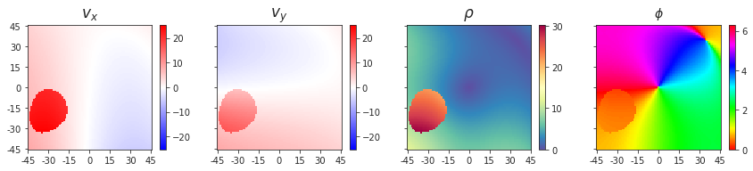
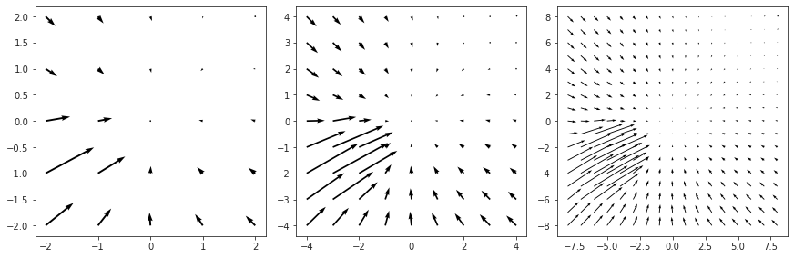
i, j, k = 0, 1, -2
show_velocity(alpha_dot[i, ..., j, k])
show_opticflow(alpha_dot[i, ..., j, k])
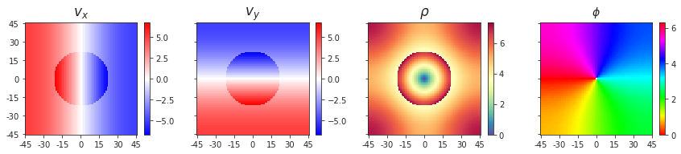
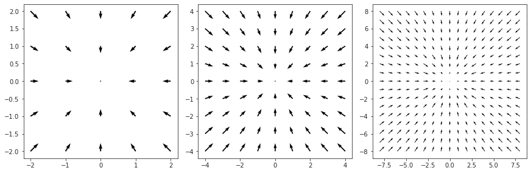
i, j, k = 0, 1, -4
show_velocity(alpha_dot[i, ..., j, k])
show_opticflow(alpha_dot[i, ..., j, k])
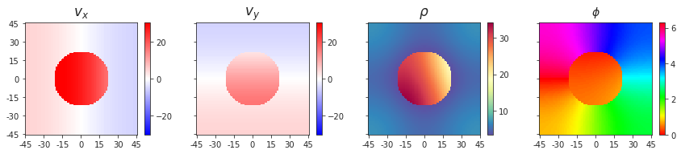
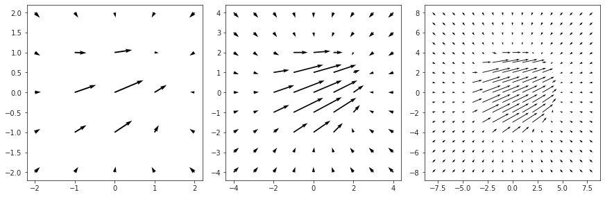
v_transl.shape
(4, 91, 91, 3, 7, 10)
i = 3
j = 2
k = 5
show_velocity(v_transl[i, ..., :2, j, k])
show_opticflow(v_transl[i, ..., :2, j, k])
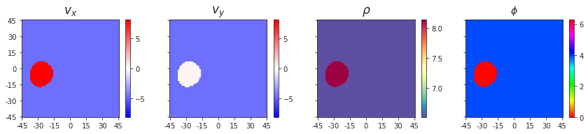
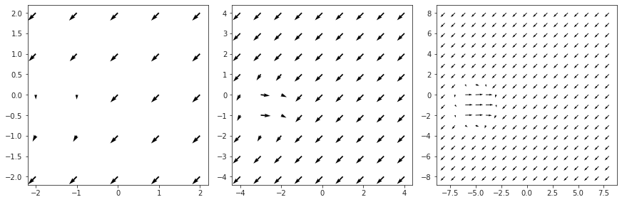
i = 1
j = 4
k = 5
show_velocity(v_transl[i, ..., :2, j, k])
show_opticflow(v_transl[i, ..., :2, j, k])
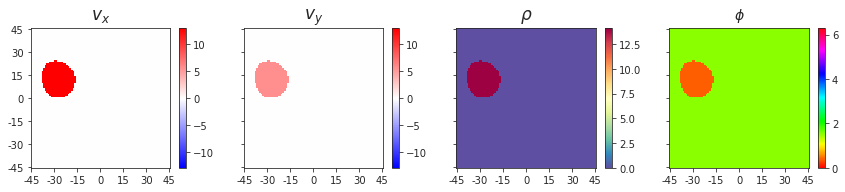
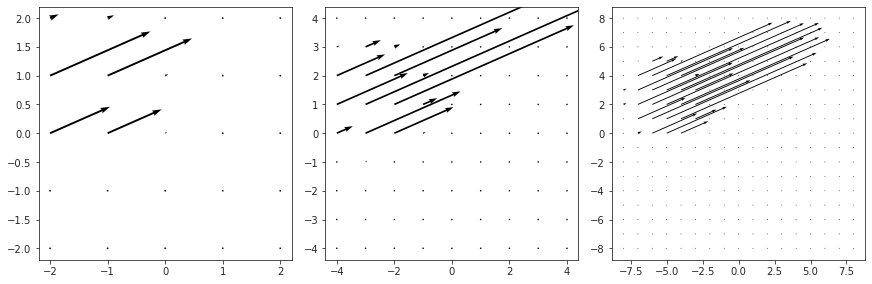
self.fix[i], self.vel[: ,j], collections.Counter(np.round(v_transl[i, ..., :2, j, k], 12).ravel())
(array([0.3, 0. , 1. ]),
array([ 3., 0., 10.]),
Counter({0.0: 15738, 12.930654850486: 412, 5.7: 412}))
x_real = np.einsum('aij, axyjbc -> axyibc', of.R, x)
x.shape, x_real.shape
((4, 91, 91, 3, 7, 10), (4, 91, 91, 3, 7, 10))
i = 1
j = 2
k = 3
_tmp = x[i, ..., j, k]
norm = sp_lin.norm(_tmp, axis=-1, check_finite=False)
show_xyzd(_tmp[..., 0], _tmp[..., 1], _tmp[..., 2], norm)
_tmp = x_real[i, ..., j, k]
norm_real = sp_lin.norm(_tmp, axis=-1, check_finite=False)
show_xyzd(_tmp[..., 0], _tmp[..., 1], _tmp[..., 2], norm_real)
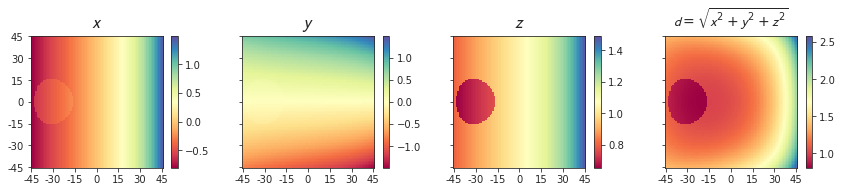
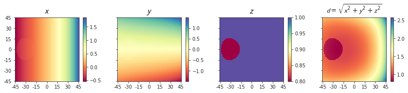
eps = norm_real - norm
sns.histplot(eps.ravel());
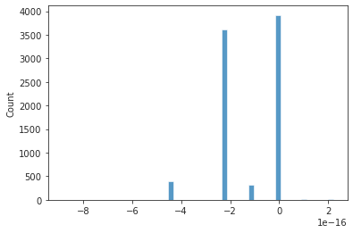
END¶
v_obj = np.array([13.5, 5.7, 0]).reshape(3, 1)
v_obj = of._compute_v_tr(v_obj, mask)
v_obj.shape
(4, 91, 91, 3, 1)
show_velocity(v_obj[i, ..., :2, 0])
show_opticflow(v_obj[i, ..., :2, 0])
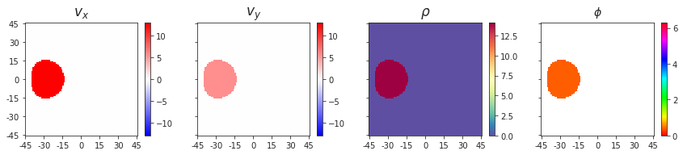
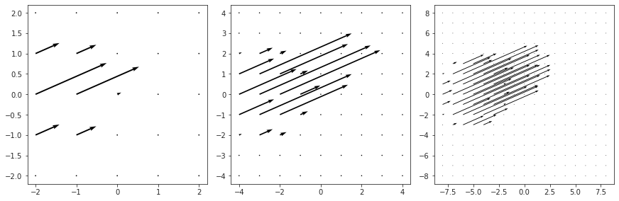
obj_pos = np.array([
[-0.2, 0, 0.2],
[-0.2, 0, 0.4],
[-0.2, 0, 0.6],
[-0.2, 0, 0.8],
[-0.2, 0, 1.0],
[-0.2, 0.2, 1.0],
[0, 0, 0.2],
[0, 0, 1.0],
]).T
obj_vel = np.array([
[13.5, 5.7, 0],
[13.5, 5.7, 0],
[13.5, 5.7, 0],
[13.5, 5.7, 0],
[13.5, 5.7, 0],
[13.5, 5.7, 0],
[13.5, 5.7, 0],
[13.5, 5.7, 0],
]).T
obj_pos.shape, obj_vel.shape
((3, 8), (3, 8))
vel = np.array([
[0, 0, 10],
[0, 0, -10],
[5, 5, 0],
[1, -2, 0],
[3, 0, 10],
[3, 3, 1],
[-2, 1, 5],
], dtype=float).T
vel.shape
(3, 7)
vel
array([[ 0., 0., 5., 1., 3., 3., -2.],
[ 0., 0., 5., -2., 0., 3., 1.],
[ 10., -10., 0., 0., 10., 1., 5.]])
%%time
alpha_dot, v_transl, v_rot = of.compute_flow(vel)
CPU times: user 56.7 ms, sys: 20.1 ms, total: 76.9 ms
Wall time: 74.8 ms
v_transl_obj = of.add_obj(obj_pos, obj_vel)
v_transl_obj.shape
(4, 91, 91, 3, 8)
plt.imshow(v_transl_obj[0, ..., 0, 3])
<matplotlib.image.AxesImage at 0x7f923c3a4fd0>
test = v_transl_obj[0, ..., :2, 4]
show_velocity(test)
show_opticflow(test)
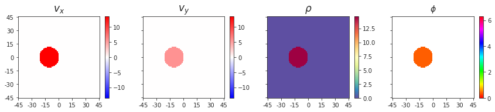
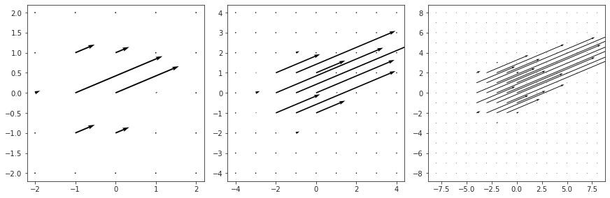
test.shape
(91, 91, 2)
v = v_transl - v_rot
v.shape
(4, 91, 91, 3, 7)
test = dc(v)
test.shape
(4, 91, 91, 3, 7)
mask_ultra = np.repeat(np.repeat(np.repeat(np.expand_dims(np.expand_dims(np.expand_dims(
mask, 0), -1),-1), 3, -2), 7, -1), 4, 0)
mask_ultra.shape
(4, 91, 91, 3, 7)
test[mask_ultra] = np.repeat(v_obj, 7, -1)[mask_ultra]
final = of._compute_alpha_dot(test)
final.shape
(4, 91, 91, 2, 7)
i, j = 0, 0
show_velocity(final[i, ..., j])
show_opticflow(final[i, ..., j])
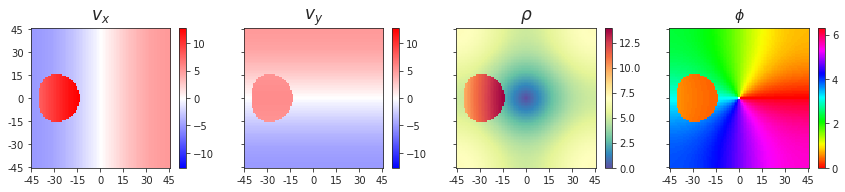
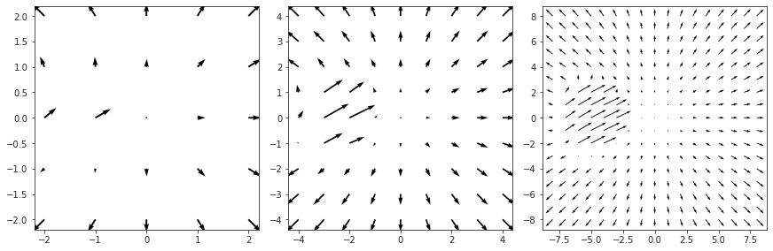
self = of
self.gamma = np.concatenate([
np.tan(self.alpha),
np.ones((self.dim,) * 2 + (1,)),
], axis=-1)
self.gamma.shape
(91, 91, 3)
self.alpha.shape
(91, 91, 2)
gamma_r = np.einsum('aij, mnj -> amni', self.R, self.gamma)
gamma_r.shape
(4, 91, 91, 3)
self.R.shape, self.gamma.shape
((4, 3, 3), (91, 91, 3))
self.gamma[..., 0].shape
(91, 91)
TODO¶
When computing object velocity, make sure to use the mask to provide correct x,y,z…
alpha_dot.shape, v.shape, v_transl.shape, v_rot.shape
((4, 91, 91, 2, 7), (4, 91, 91, 3, 7), (4, 91, 91, 3, 7), (4, 91, 91, 3, 7))
i, j = 3, 4
show_velocity(alpha_dot[i, ..., j])
show_opticflow(alpha_dot[i, ..., j])
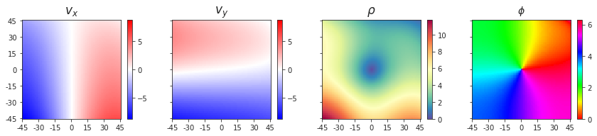
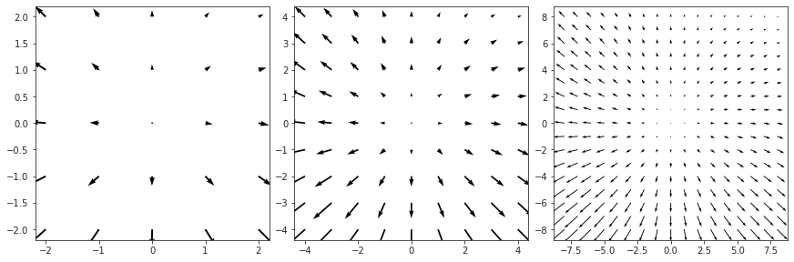
i, j = 3, 4
show_velocity(alpha_dot[i, ..., j])
show_opticflow(alpha_dot[i, ..., j])
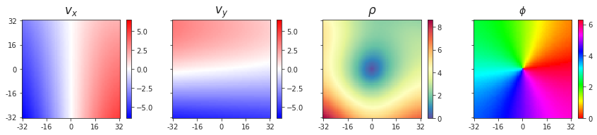
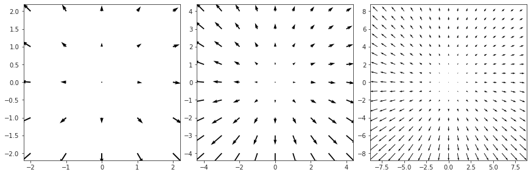
rho, theta = vel2polar(alpha_dot[i, ..., j])
np.unravel_index(np.argmin(rho), rho.shape)
(45, 45)
rho[45, 45]
2.0517770523394535e-15
np.round(alpha_dot[:, of.dim//2][:, of.dim//2], 14)
array([[[ 0., 0., 0., 0., 0., 0., 0.],
[ 0., 0., 0., 0., 0., 0., 0.]],
[[ 0., -0., 0., 0., 0., 0., 0.],
[ 0., 0., 0., 0., 0., 0., 0.]],
[[ 0., -0., 0., 0., 0., 0., 0.],
[ 0., -0., 0., -0., 0., 0., 0.]],
[[-0., 0., 0., 0., -0., -0., -0.],
[-0., 0., -0., 0., -0., -0., -0.]]])
of.vel.shape
(3, 7)
Before object adding¶
for i in range(len(of.fix)):
for j in range(of.vel.shape[1]):
msg = f"fixation: {of.fix[i]}, "
msg += f"velocity: {of.vel[:, j]}"
print(msg)
test = v_rot[i, ..., :2, j]
show_velocity(test)
show_opticflow(test)
print('\n', '-' * 80, '\n')
test = alpha_dot[i, ..., :2, j]
show_velocity(test)
show_opticflow(test)
print('\n', '-' * 80)
print('-' * 80, '\n\n\n')
fixation: [0. 0. 1.], velocity: [ 0. 0. 10.]
/home/hadi/anaconda3/lib/python3.8/site-packages/matplotlib/quiver.py:686: RuntimeWarning: divide by zero encountered in double_scalars
length = a * (widthu_per_lenu / (self.scale * self.width))
/home/hadi/anaconda3/lib/python3.8/site-packages/matplotlib/quiver.py:686: RuntimeWarning: invalid value encountered in multiply
length = a * (widthu_per_lenu / (self.scale * self.width))
--------------------------------------------------------------------------------
--------------------------------------------------------------------------------
--------------------------------------------------------------------------------
fixation: [0. 0. 1.], velocity: [ 0. 0. -10.]

--------------------------------------------------------------------------------
--------------------------------------------------------------------------------
--------------------------------------------------------------------------------
fixation: [0. 0. 1.], velocity: [5. 5. 0.]
--------------------------------------------------------------------------------
--------------------------------------------------------------------------------
--------------------------------------------------------------------------------
fixation: [0. 0. 1.], velocity: [ 1. -2. 0.]
--------------------------------------------------------------------------------
--------------------------------------------------------------------------------
--------------------------------------------------------------------------------
fixation: [0. 0. 1.], velocity: [ 3. 0. 10.]
--------------------------------------------------------------------------------
--------------------------------------------------------------------------------
--------------------------------------------------------------------------------
fixation: [0. 0. 1.], velocity: [3. 3. 1.]

--------------------------------------------------------------------------------
--------------------------------------------------------------------------------
--------------------------------------------------------------------------------
fixation: [0. 0. 1.], velocity: [-2. 1. 5.]
--------------------------------------------------------------------------------
--------------------------------------------------------------------------------
--------------------------------------------------------------------------------
fixation: [0.3 0. 1. ], velocity: [ 0. 0. 10.]
--------------------------------------------------------------------------------
--------------------------------------------------------------------------------
--------------------------------------------------------------------------------
fixation: [0.3 0. 1. ], velocity: [ 0. 0. -10.]
--------------------------------------------------------------------------------
--------------------------------------------------------------------------------
--------------------------------------------------------------------------------
fixation: [0.3 0. 1. ], velocity: [5. 5. 0.]
--------------------------------------------------------------------------------
--------------------------------------------------------------------------------
--------------------------------------------------------------------------------
fixation: [0.3 0. 1. ], velocity: [ 1. -2. 0.]
--------------------------------------------------------------------------------
--------------------------------------------------------------------------------
--------------------------------------------------------------------------------
fixation: [0.3 0. 1. ], velocity: [ 3. 0. 10.]


--------------------------------------------------------------------------------
--------------------------------------------------------------------------------
--------------------------------------------------------------------------------
fixation: [0.3 0. 1. ], velocity: [3. 3. 1.]
--------------------------------------------------------------------------------
--------------------------------------------------------------------------------
--------------------------------------------------------------------------------
fixation: [0.3 0. 1. ], velocity: [-2. 1. 5.]
--------------------------------------------------------------------------------
--------------------------------------------------------------------------------
--------------------------------------------------------------------------------
fixation: [0. 0.3 1. ], velocity: [ 0. 0. 10.]
--------------------------------------------------------------------------------
--------------------------------------------------------------------------------
--------------------------------------------------------------------------------
fixation: [0. 0.3 1. ], velocity: [ 0. 0. -10.]
--------------------------------------------------------------------------------
--------------------------------------------------------------------------------
--------------------------------------------------------------------------------
fixation: [0. 0.3 1. ], velocity: [5. 5. 0.]
--------------------------------------------------------------------------------
--------------------------------------------------------------------------------
--------------------------------------------------------------------------------
fixation: [0. 0.3 1. ], velocity: [ 1. -2. 0.]
--------------------------------------------------------------------------------
--------------------------------------------------------------------------------
--------------------------------------------------------------------------------
fixation: [0. 0.3 1. ], velocity: [ 3. 0. 10.]
--------------------------------------------------------------------------------
--------------------------------------------------------------------------------
--------------------------------------------------------------------------------
fixation: [0. 0.3 1. ], velocity: [3. 3. 1.]
--------------------------------------------------------------------------------
--------------------------------------------------------------------------------
--------------------------------------------------------------------------------
fixation: [0. 0.3 1. ], velocity: [-2. 1. 5.]
--------------------------------------------------------------------------------
--------------------------------------------------------------------------------
--------------------------------------------------------------------------------
fixation: [0.3 0.3 1. ], velocity: [ 0. 0. 10.]
--------------------------------------------------------------------------------
--------------------------------------------------------------------------------
--------------------------------------------------------------------------------
fixation: [0.3 0.3 1. ], velocity: [ 0. 0. -10.]

--------------------------------------------------------------------------------
--------------------------------------------------------------------------------
--------------------------------------------------------------------------------
fixation: [0.3 0.3 1. ], velocity: [5. 5. 0.]

--------------------------------------------------------------------------------
--------------------------------------------------------------------------------
--------------------------------------------------------------------------------
fixation: [0.3 0.3 1. ], velocity: [ 1. -2. 0.]
--------------------------------------------------------------------------------
--------------------------------------------------------------------------------
--------------------------------------------------------------------------------
fixation: [0.3 0.3 1. ], velocity: [ 3. 0. 10.]
--------------------------------------------------------------------------------
--------------------------------------------------------------------------------
--------------------------------------------------------------------------------
fixation: [0.3 0.3 1. ], velocity: [3. 3. 1.]
--------------------------------------------------------------------------------
--------------------------------------------------------------------------------
--------------------------------------------------------------------------------
fixation: [0.3 0.3 1. ], velocity: [-2. 1. 5.]
--------------------------------------------------------------------------------
--------------------------------------------------------------------------------
--------------------------------------------------------------------------------